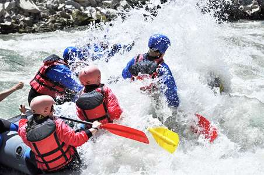

Our team is dedicated to delivering innovative solutions with a customer-first approach, ensuring that your goals are met with speed and precision. Whether you are partnering with us for the first time or the hundredth, you can always count on Summer River Expedition to keep you moving forward.